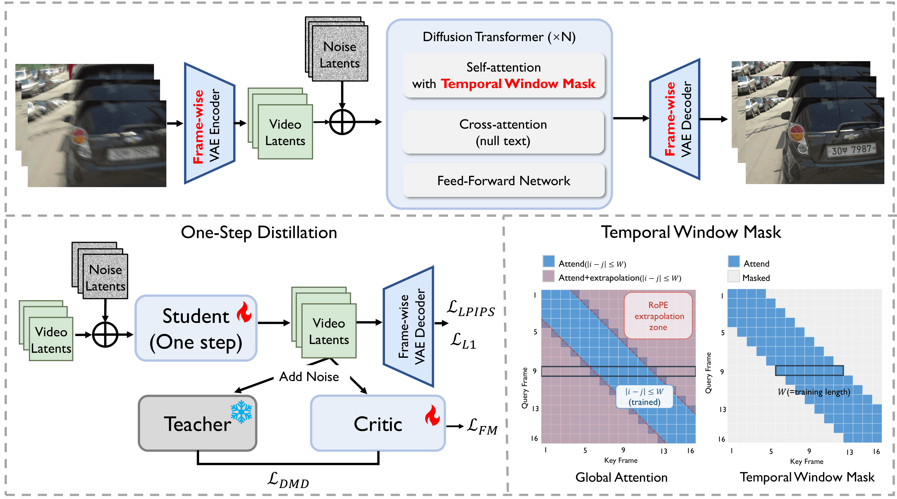
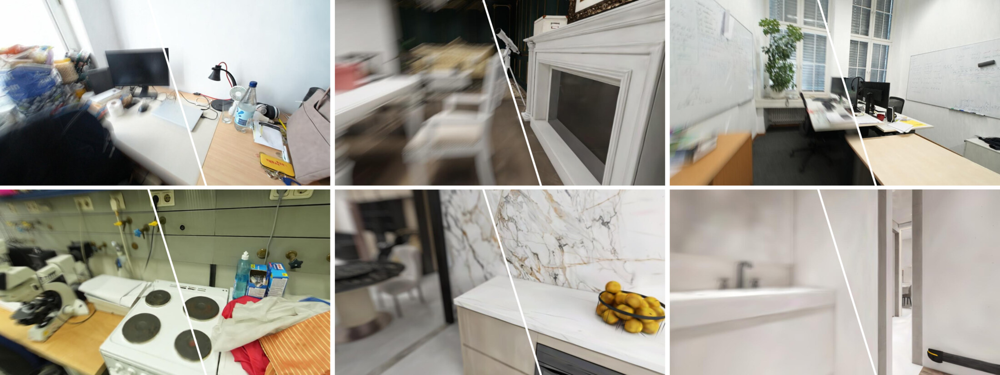

TL;DR. RealVDeblur is a one-step video diffusion model for robust real-world video deblurring. Trained on OmniBlur and equipped with frame-wise encoding and a Temporal Window Mask, it restores sharp, temporally consistent videos and improves downstream 3D perception.
Real-world video deblurring remains challenging due to diverse motion patterns, complex degradations, and the scarcity of realistic training data, yet robust restoration is critical for downstream pipelines such as mobile imaging and 3D reconstruction. This work presents RealVDeblur, an efficient generative framework designed to improve in-the-wild robustness under diverse real capture conditions. First, a large-scale, physically grounded blur synthesis pipeline is constructed from scene-level 3D Gaussian Splatting (3DGS) assets and high-frame-rate videos, providing realistic training data covering both camera-induced and object-motion blur. Second, a video diffusion prior is leveraged for restoration; to better accommodate frame-dependent blur variations, temporal compression in the VAE is disabled and a frame-wise encoding scheme is adopted. For practical deployment on long videos, multi-step diffusion sampling is distilled into an efficient one-step generator, and a training-free Temporal Window Mask stabilizes inference beyond the training horizon with constant memory usage. Extensive experiments on diverse real-world benchmarks demonstrate strong perceptual quality, semantic fidelity, and temporal consistency on unseen videos, as well as improved robustness in downstream 3D reconstruction under severe motion blur.
RealVDeblur adapts a pre-trained video diffusion model for real-world video deblurring. It combines frame-wise latent encoding for varying blur, one-step distillation for efficient inference, and a training-free Temporal Window Mask for stable long-video restoration.

OmniBlur combines approximately 2,000 3DGS scenes and 3,000 high-frame-rate videos to cover camera-motion, object-motion, defocus, and compound blur. It contains about 56,000 training clips with 1.1 million frames.

Examples of camera-motion and depth-dependent defocus blur synthesized from diverse 3DGS scenes.
RealVDeblur delivers sharper details and stronger temporal consistency across diverse real-world blur.
RealVDeblur restores sharp training views before standard 3DGS reconstruction, reducing floaters and improving texture and geometry. Choose a baseline for the NVS comparison and a scene below: the first row shows the blurred and restored training observations, and the second compares the corresponding novel-view synthesis results.
Left: blurred observations used by the selected baseline. Right: observations restored by RealVDeblur before standard 3DGS training.
Left: novel views rendered by 3DGS from blurred observations. Right: novel views rendered by 3DGS from RealVDeblur-restored observations.
Deblurring before DepthAnythingV3 produces sharper depth boundaries and more consistent scene geometry.
@article{jinre2025realvdeblur,
author = {Jin, Renbiao and Yang, Mingxin and Chen, Yutian and Zhuang, Junhao and Cai, Xin and Yu, Mulin and Xu, Linning and Yu, Wenxian and Zou, Danping and Guo, Shi and Xue, Tianfan},
title = {RealVDeblur: One-Step Diffusion for Generalizable Real-World Video Deblurring},
booktitle = {arXiv preprint arXiv:2607.xxxx},
year = {2026},
}